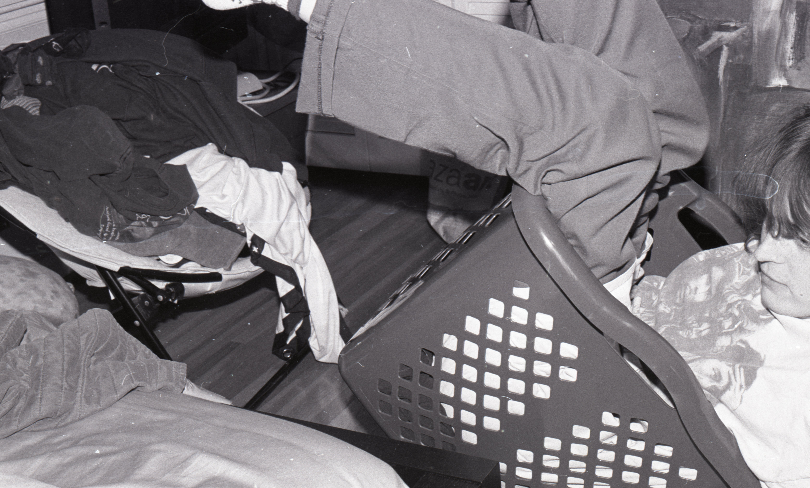
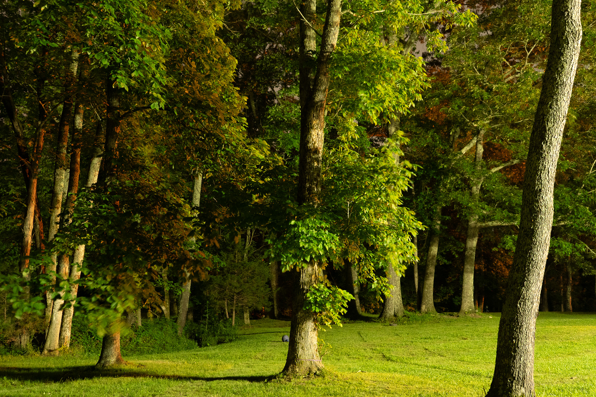
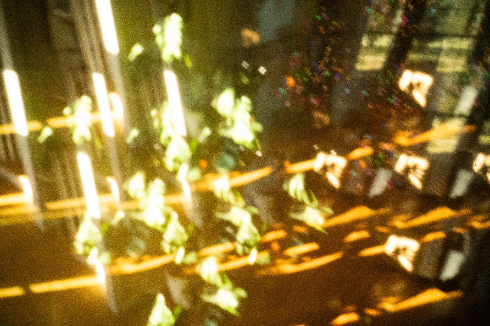
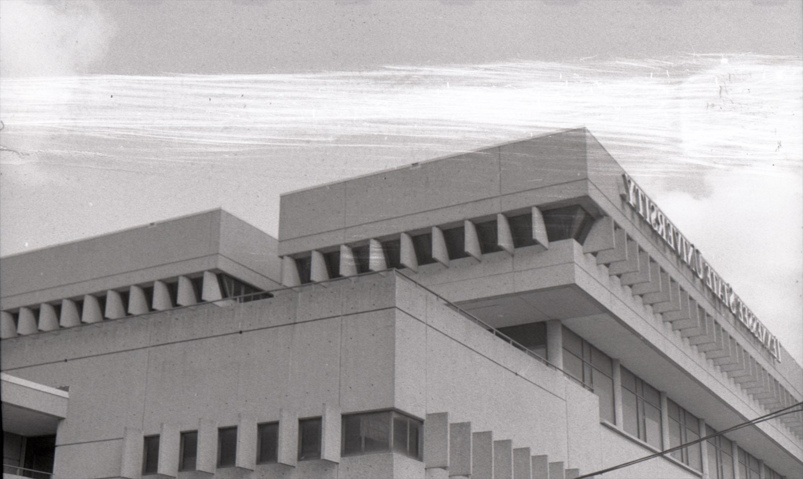
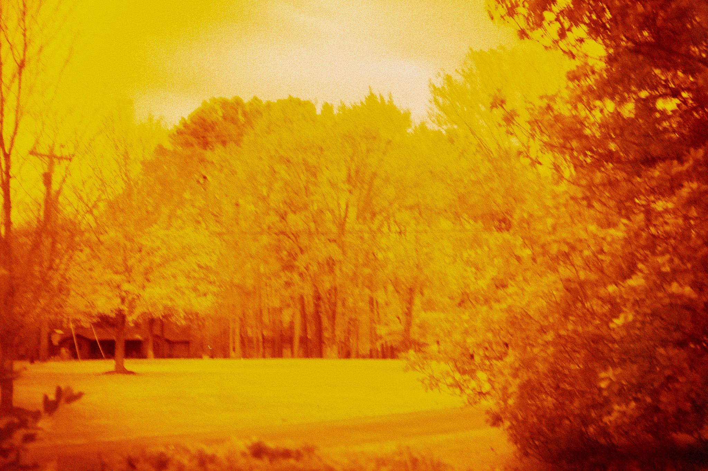
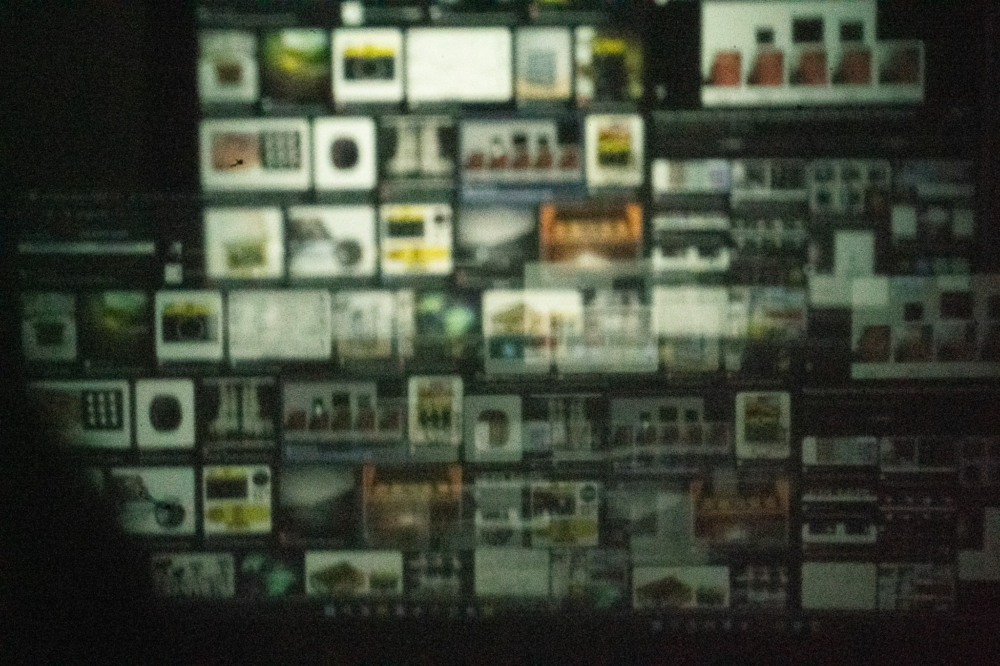
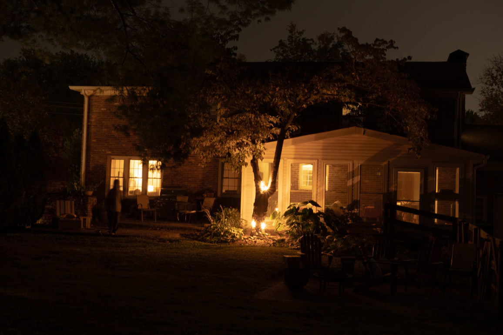

Hello! Welcome to my collage and collection of everything that I enjoy that I can't fit onto my portfolio. For various reasons, many of my art pieces cannot be accepted onto my portfolio, however, I still want their spirit to live on. So I have created a sort of internet island of misfit projects. These projects may range from photography, to journaling, to mixed media, and to whatever else I decide I'd like to see here. Lucky for me, since this isn't an official site for myself, I can care less about the quality of the images and focus more on their presentation and presence on the webpage!

Outside of graphic design, I find that photography is fun and relaxing. I am particularly fascinated by old cameras and techniques. Often I use pinholes, 35mm, 120mm, and sometimes digital photography. More often than not, the photos that I take are taken on black and white film, which I very rarely develop. It can be hard to sit on a finished film roll and not develop it, but something about the surprise of what is inside excites me. As for imagery, it really depends on the medium. My digital photography usually consists of long exposures and experiments, while my black and white photos focus more on spaces and patterns found in the world.
